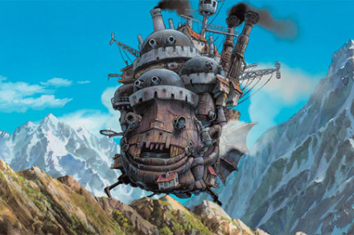
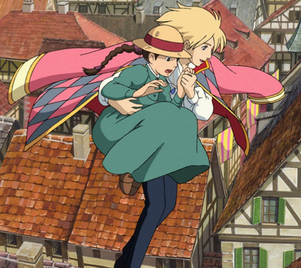
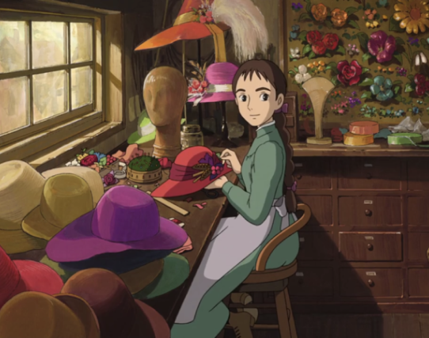
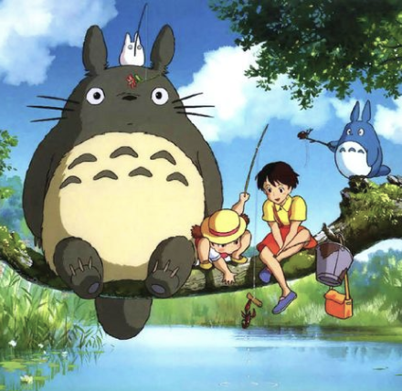
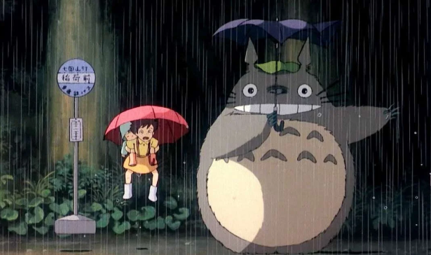
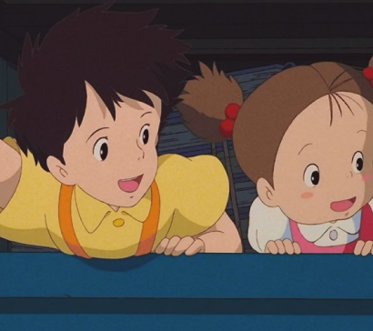

Studio Ghibli's animation is popular with all adults and children. Not only a solid story, but also a gem-like OST evokes innocence in everyone's hearts. Ghibli's unique beautiful colors and novel themes that evolve with the times are also the secret of "Long Run."
Masterpiece of GHIBLI
Howl's Moving Castle
하울의 움직이는 성
2004



It is a 2004 animated feature film by Ghibli Studios, directed by Japanese master animator Hayao Miyazaki. It is based on a fantasy novel of the same name by British novelist Diana Win Jones. It is one of the most famous and well-known works of Ghibli, ranking sixth in Japanese box office revenue and third in global box office rankings. The OST is so good that a movie can be described as an OST. When a boy named Sophie is enchanted and turns 90 years old, he enters Howl's magical castle. It's a strange but cute love adventure story.
Spirited Away
센과 치히로의 행방불명
2001

Produced by Studio Ghibli, directed by Hayao Miyazaki. It was released in Japan in 2001 and in Korea in 2002. While passing through a tunnel, my parents ate strange food and turned into pigs. Because of the incident, the girl goes to a hot spring used by the gods, and on the other hand, it is a dreamy and unique movie with a unique atmosphere.
My Neighbor Totoro
이웃집 토토로
1988

Japanese animation directed by Hayao Miyazaki in 1988. It is a calm and heartwarming fantasy drama about a sister who moved from the city to the countryside in 1952 and Totoro, the god of country forests. A large number of Ghibli works have been updated on Netflix, and Korean dubbing is also being uploaded. I feel like I'm back to my childhood with Totoro, a cute spirit that I met in the forest of an old house in the middle of the forest. the wit of a cat bus invisible to adults It is a work that shows off its attractive characters and imagination.

